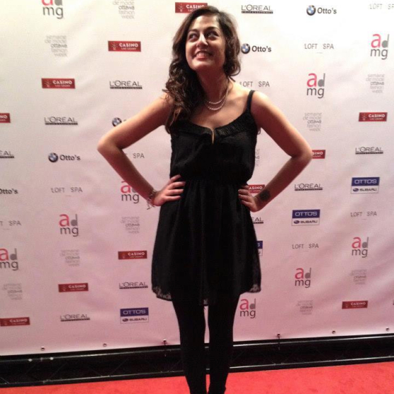
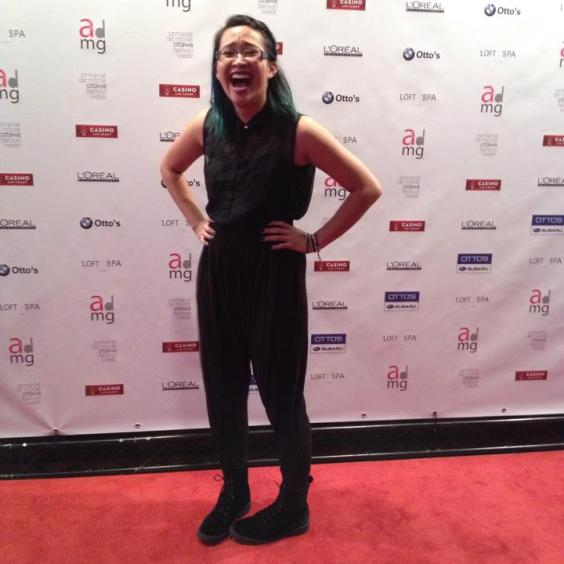

 I am an Algonquin Student about to study Interactive Media Design in Ottawa, Ontario. I spend a lot of my days sleeping and my nights working (so I usually end up wondering where the sun is). I like to spend my time drawing, scrolling through the funnies on tumblr, binge-watching TV shows and making the good times roll (literally, because Dungeons & Dragons is a thing for me). I’m twenty-five and I’m a Libra, which means I’m always doing a little bit of everything because deciding is hard.
 I am a uOttawa Communications grad from Mississauga who is suffering from wanderlust (I lived in South Korea for over a year). I can be caught spending too much time laughing about surreal nonsense, reading up on social issues, bopping to oldies (but goodies), joining fandoms and reblogging for the aesthetic. I live for the 90’s and all things fashion-related. I am a twenty-five year old photographer who likes to find happiness in the little things. Unlike Alia, I can be found in either Ottawa or the GTA depending on the season.